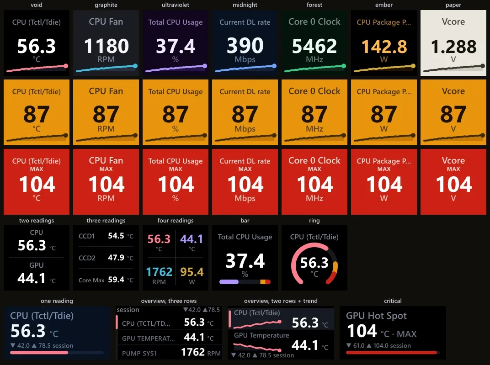
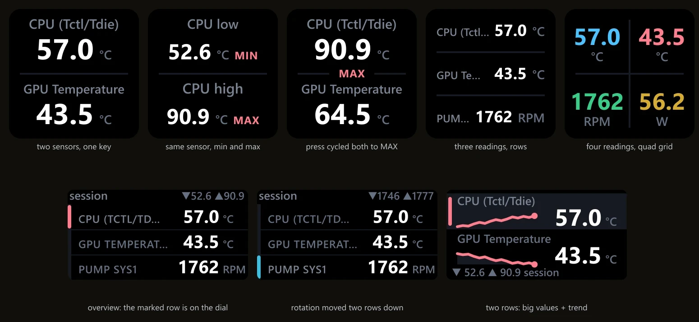

HWiNFO Sensors for Windows
Put CPU and GPU temperature, clock speeds, fan RPM, usage and power on your keys and dials.
- Version
- 1.7.1
- Requires
- Windows 10 or later (x64), Stream Deck 6.9+ and HWiNFO
- Price
- Free, MIT licensed

- Keys
- Stream Deck models with keys. One reading per key with a live sparkline, bar or ring gauge, or two, three or four readings on one key. A press can open a detail page.
- Dials
- Stream Deck + and Stream Deck + XL: rotate, push and touch, rotation sets with named groups, and a Control key that drives dials from anywhere. Hardware compatibility
- Display
- Seven themes, including a light theme. Amber warn and red critical alerts keep the same palette on every theme.
- Status
- When HWiNFO stops publishing, keys say so with a screen that names the problem and its fix. The Gadget source cannot prove HWiNFO is still updating, so steady Gadget values show Age unknown.
- Privacy
- No ads, no telemetry, and no network requests at all: this plugin's only connection is the local one to the Stream Deck app.

Setup
- Install the plugin from the Elgato Marketplace, or double-click the .streamDeckPlugin from GitHub Releases.
- Run HWiNFO (free or Pro) and tick Shared Memory Support in its Settings. If a key shows Access denied, the troubleshooting guide lists what to check.
- Drag Sensor Reading onto a key and pick a sensor from the searchable list.
Free HWiNFO switches Shared Memory off after 12 hours. With Gadget reporting enabled, Auto can fall back to Gadget, then switch back when Shared Memory returns. Saved readings need explicit links to work across sources. HWiNFO is a separate free program by REALiX; this plugin does not bundle it.